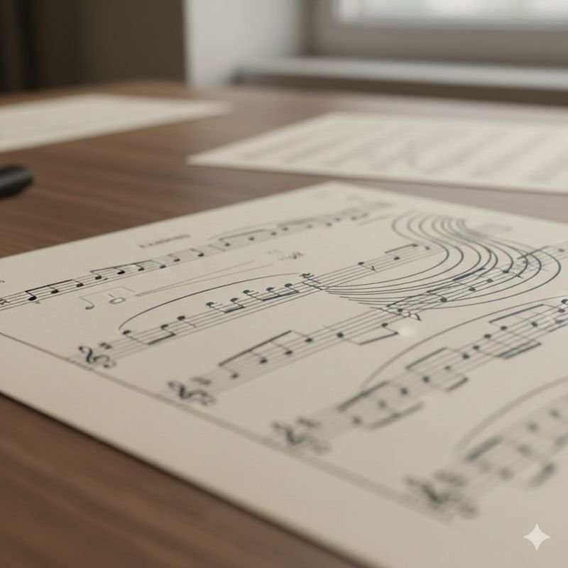
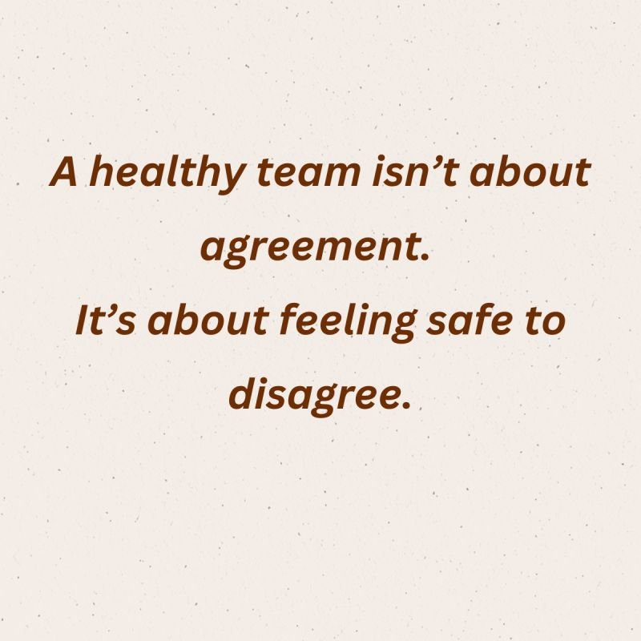
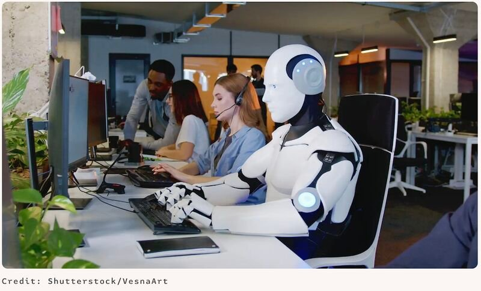

Notes on people, leadership and systems
Short articles I first published on LinkedIn: on the edges leaders grow through, the hidden dynamics of teams and boards, and where people and technology meet.
The line inside every leader
Skill is almost never the obstacle. Arnold Mindell's idea of the edge, and why it sharpens every talent conversation.
The Founding Myth: do we still remember why we are here?
Teams rarely lose momentum because of strategy. They lose it because they forget why they came together.

Where the role outgrows the self-image
One quiet sentence from a senior executive, and what it says about the edge at the top of an organisation.
The voice no chart assigns
Why decisions agreed in the room are quietly abandoned once everyone leaves it.
The double edge: when one person grows, the whole team is moved
When one person outgrows the team's unspoken “we”, everyone else arrives at an edge they did not choose.

The room always knows more than it says
Leadership rooms are read by who speaks loudest, not by what is quietly being held back.
Agency begins where observation ends
Capable, committed teams can still leave decisions suspended. Agency is what moves them.
Holding the centre in a divided room
Choosing a side too early ends the conversation. Holding the tension turns it into data.

Five signs of a healthy team
A healthy team is not about how often people agree. It is about what happens when they don't.

AI replacing humans sounds great until the human impact hits
What Klarna's reversal on AI-driven staffing teaches anyone building where technology meets people.
Where do your People and Tech strategies meet?
Moderna brought HR and Tech under one leadership team. Culture and code may be one system.